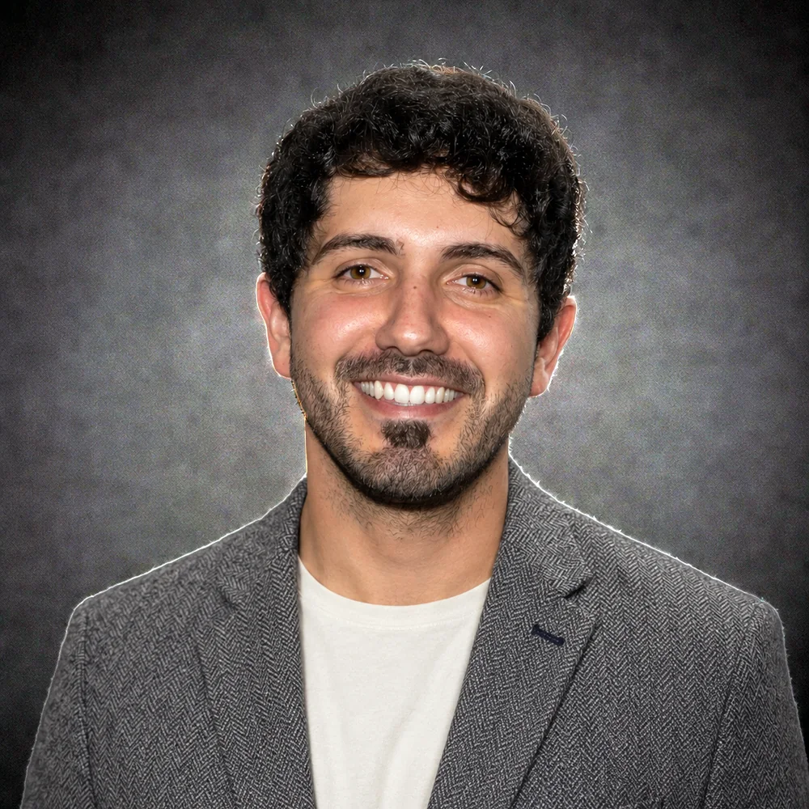
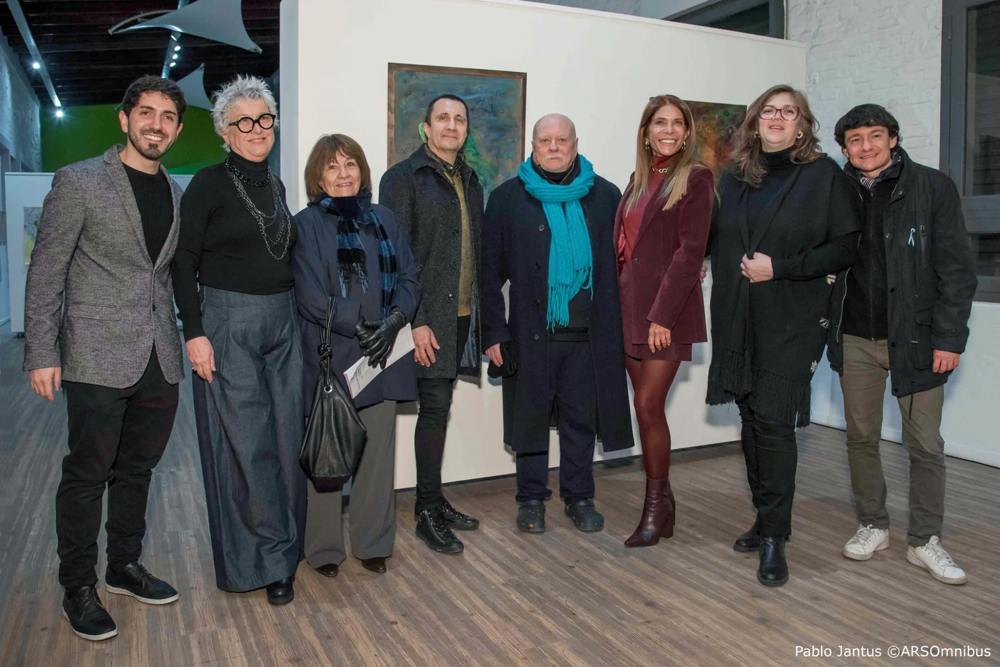
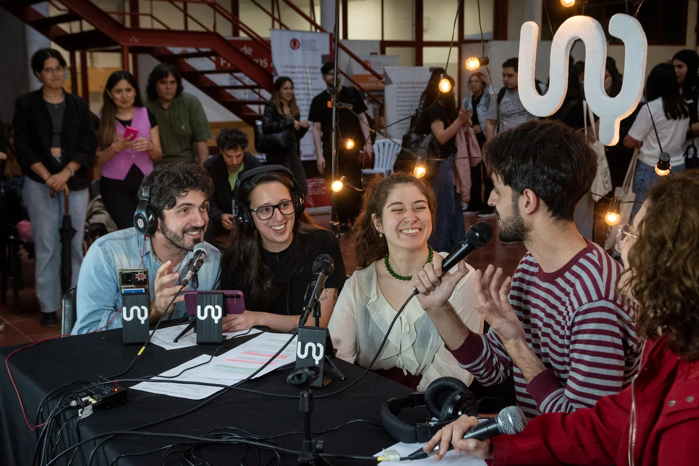
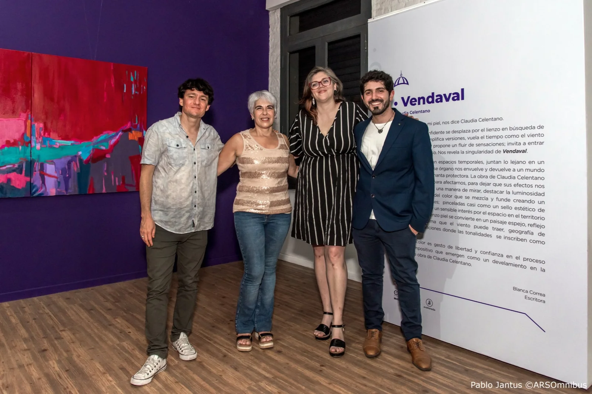
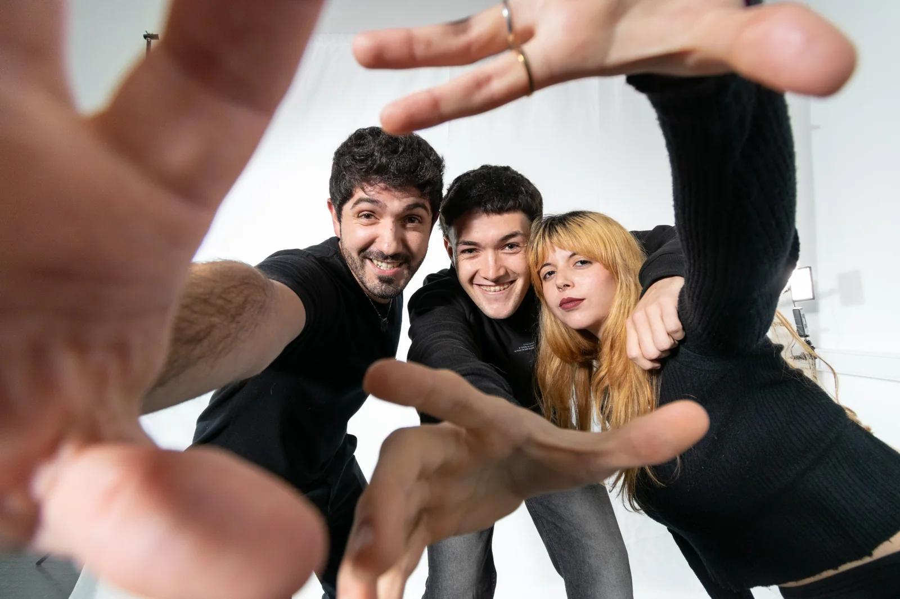

Gestión cultural pública
Programación, producción, públicos, instituciones, recursos y articulación con actores diversos.
Avellaneda · Buenos Aires · Argentina
Gestión cultural pública · procesos · comunicación · audiovisual
Trabajo en el cruce entre cultura, instituciones, equipos y comunidad. Coordino proyectos, ordeno procesos complejos y convierto problemas concretos en decisiones operativas.

Perfil
Soy gestor cultural y Licenciado en Artes Digitales por la Universidad Nacional de Quilmes. Desde 2015 trabajo en la gestión cultural pública de la Municipalidad de Avellaneda y desde 2021 coordino el Centro Municipal de Arte.
En la práctica, una parte central de mi trabajo consiste en sistematizar procesos, ordenar información, coordinar equipos y trabajar sobre conflictos entre necesidades, tiempos, recursos y personas. Me interesa la construcción institucional cuando puede volverse una herramienta concreta para mejorar experiencias y ampliar posibilidades.
Cómo trabajo
No pienso estas capacidades como especialidades separadas: suelen aparecer juntas frente a un mismo problema.
Programación, producción, públicos, instituciones, recursos y articulación con actores diversos.
Convertir tareas dispersas en circuitos claros, documentables y sostenibles para los equipos.
Leer intereses, restricciones y tensiones para construir acuerdos operativos y decisiones posibles.
Narrativa, contenidos, producción audiovisual y herramientas digitales al servicio de proyectos concretos.

Territorio
Once años de trabajo en cultura pública me dieron una formación difícil de reducir a un cargo: producción, programación, atención de públicos, coordinación, comunicación, negociación, crisis, montaje y trabajo cotidiano con equipos.
Fotografía: Pablo Jantus / ARSOmnibus
Trayectoria
Una síntesis cronológica. Cada etapa suma herramientas que hoy conviven en la práctica profesional.
Inicio de la trayectoria profesional en la Secretaría de Cultura, con experiencia progresiva en producción, gestión y coordinación.
Participación en la etapa fundacional de un espacio cultural colectivo de Avellaneda que articuló producción artística, organización territorial y participación pública. Después de la pandemia, parte de esa experiencia continuó en una organización política local.
Desarrollo de una productora/proyecto audiovisual con trabajos de videoclips, cortometrajes, fotografía, redes y comunicación.
Asunción de la Coordinación General del CMA de Avellaneda, integrando gestión de equipos, programación, producción y operación institucional.
Participación en la primera cohorte de formación federal y multipartidaria para liderazgos emergentes. Una experiencia que amplió redes, herramientas de liderazgo público y trabajo con personas de distintos espacios y provincias.
Graduación en la Universidad Nacional de Quilmes. El Trabajo Final Integrador fue el documental Don’t Be Afraid · No tengan miedo.
Selección para integrar la participación argentina en el festival internacional y presentar un recorrido que conecta audiovisual, gestión cultural y el desarrollo de Pulsar Humano.


Aprendizaje
Aprender a producir con reglas, recursos finitos, responsabilidades públicas y necesidades reales.
Entender cómo se construyen pertenencia, acuerdos, identidad y capacidad de acción con otros.
Exponerse a miradas políticas y territoriales distintas, trabajar con desacuerdos y construir lenguaje común.
Sumar marcos conceptuales, herramientas audiovisuales, tecnología y pensamiento crítico a la experiencia profesional.
Proyectos
Gestión, audiovisual, experimentación digital y proyectos propios.
Gestión cultural pública
Coordinación general de un espacio cultural público de Avellaneda con artes visuales, espectáculos, actividades, producción y comunidad.
Productora audiovisual
Proyecto de producción audiovisual con videoclips, cortometrajes, fotografía, redes sociales y asesoramiento comunicacional.
Documental
Trabajo Final Integrador de la Licenciatura en Artes Digitales. Un documental que parte de un viaje y una pregunta sobre los miedos que condicionan la vida que deseamos.
Tecnología y comunidad
Proyecto en desarrollo para conectar necesidades concretas con capacidades disponibles entre personas, instituciones y comunidades.
Comunicación
Mi recorrido incluye producción audiovisual, conducción en UNQ Streaming, participación en contenidos de Televisión Pública y experiencias donde comunicación y cultura funcionan como herramientas para abrir conversaciones.

Ideas y publicaciones
Selección de textos publicados fuera de este sitio.
Prensa y fuentes públicas
Este sitio funciona como fuente propia, pero enlaza referencias externas para respaldar formación, actividad y trayectoria.
Contacto
Para conversaciones profesionales y colaboraciones, podés encontrarme en mis canales públicos.